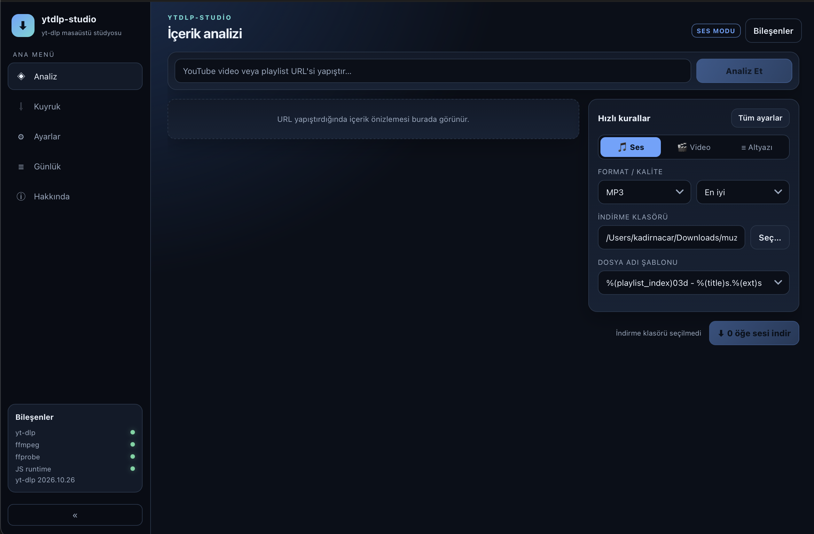

Genel bakış
Link Downloader (kod tabanındaki uygulama kimliği: ytdlp-studio), YouTube video ve playlist bağlantılarını analiz etmek; içerik öğelerini seçmek; ses, video ve altyazı indirme seçeneklerini belirlemek; işlemleri kuyruk üzerinden takip etmek için geliştirilmiş masaüstü uygulamasıdır.
Uygulama, native masaüstü kabuğu için Wails v3, servis ve indirme yönetimi için Go, kullanıcı arayüzü için React ve TypeScript kullanır. Medya çözümleme/indirme yt-dlp, medya birleştirme ve işleme ise FFmpeg araçları üzerinden yürütülür.
Ekranlar ve yetenekler
İçerik analizi
- YouTube video, playlist, Shorts, canlı yayın ve mix türündeki URL'leri tanıma.
- Playlist öğelerini başlık, sıra, thumbnail ve süre ile önizleme; arama ve çoklu seçim.
- Ses, video veya altyazı modunu belirleme; ses formatı/kalitesi ve video çözünürlüğü/kapsayıcısı seçimi.
- Çıktı dizini ve dosya adlandırma şablonunu ayarlama.
İndirme kuyruğu
- Birden fazla worker ile eşzamanlı indirme (ayar sınırları dahilinde).
- Tekil veya toplu duraklatma, sürdürme, iptal etme ve yeniden deneme.
- Görev ilerlemesi, hız, ETA, hata bilgisi ve playlist toplu ilerlemesini gösterme.
- Tamamlanan dosyayı dosya yöneticisinde açma; biten görevleri veya kuyruğu temizleme.
Ayarlar ve günlük
- Temel ve gelişmiş yt-dlp argümanlarının yönetimi ve komut önizlemesi.
- yt-dlp, FFmpeg, FFprobe ve JavaScript runtime durumunun denetlenmesi ve eksik bileşenlerin kurulması.
- Uygulama ayarları, tema/aksan, bildirimler ve günlük kayıtlarının yönetimi.

Mevcut kaynak pakette bulunan uygulama ekran görüntüsü.
Kurulum ve ilk çalıştırma
- GitHub Releases sayfasını açın.
- İşletim sisteminize ve işlemci mimarinize uygun yayın paketini seçin. Paket türü ve ek gereksinimler release notlarında belirtilir.
- Kurulum/çıkarma işlemini tamamlayın ve uygulamayı başlatın.
- Uygulamanın Bileşenler / Ayarlar ekranından yt-dlp, FFmpeg, FFprobe ve JS runtime durumunu kontrol edin. Eksik bağımlılıkları uygulama içinden kurabilirsiniz.
- Analiz alanına desteklenen YouTube video veya playlist URL'sini yapıştırın; öğeleri ve indirme seçeneklerini belirleyip kuyruğa gönderin.
Release dosyalarının isimleri ve platform kapsamı sürüme göre değişebilir. İndirmeden önce ilgili sürümün varlık listesini ve notlarını kontrol edin.
Bağımlılıklar ve platform gereksinimleri
| Bileşen | Rol | Gereksinim |
|---|---|---|
| Go | Backend ve Wails servisleri | Go 1.27 (go.mod hedefi) |
| Node.js + npm | React/TypeScript frontend | Node.js ≥ 20.19 veya ≥ 22.12; npm |
| Wails CLI | Dev, binding ve paketleme | Wails v3.0.0 |
| yt-dlp | URL analiz ve indirme | Uygulama içi bağımlılık yöneticisi tarafından denetlenir |
| FFmpeg / FFprobe | Medya birleştirme ve metadata | Uygulama içi bağımlılık yöneticisi tarafından denetlenir |
| JavaScript runtime | yt-dlp extractor/challenge desteği | Bağımlılık durum ekranından izlenir |
İşletim sistemi geliştirme araçları
- Windows: WebView2 Runtime (Windows 10/11 sistemlerinde çoğunlukla ön yüklüdür).
- macOS: macOS 13.0+ ve Xcode Command Line Tools.
- Linux: GCC/build-essential, pkg-config, GTK4, WebKitGTK 6.0 ve libsoup 3.0 geliştirme paketleri. Varsayılan yol Ubuntu 24.04+, Debian 13+ ve Fedora 40+ gibi güncel dağıtımları hedefler; hedef dağıtım gereksinimini
wails3 doctorile doğrulayın.
Güncel Wails platform gereksinimleri: Wails v3 Installation.
Geliştirme ortamı
Gerekli araçlar
- Git
- Go 1.27 (proje modül hedefi)
- Node.js 20.19+ veya 22.12+ ve npm
- Wails CLI v3.0.0
- Task CLI (Taskfile görevlerini çalıştırmak için)
- İşletim sistemine uygun WebView / native build araçları
Depoyu hazırlama
git clone https://github.com/kadirnacar/link-downloader.git
cd link-downloader
# Go bağımlılıklarını indir
go mod download
# Frontend bağımlılıklarını yükle
cd frontend
npm ci
cd ..
# Wails TypeScript binding'lerini üret
wails3 generate bindings -clean=true -ts -iGeliştirme modunda çalıştırma
wails3 dev
# veya Taskfile üzerinden
task devWails dev yapılandırması frontend Vite sunucusunu WAILS_VITE_PORT ile ayarlar; değişken tanımlı değilse Taskfile varsayılanı 9245 portudur.
Derleme ve test
Üretim derlemesi
# Wails CLI
wails3 build
# Taskfile
task buildPlatform hedefi
# Taskfile cross-target örnekleri
GOOS=windows GOARCH=amd64 task build
GOOS=linux GOARCH=amd64 task build
GOOS=darwin GOARCH=arm64 task buildCross-compile adımları platforma göre native araç zinciri veya Docker kullanabilir. Linux GUI derlemesinde CGO ve WebKit/GTK geliştirme paketleri önemlidir. Ayrıntılı platform koşulları için Wails dokümantasyonuna ve depodaki Taskfile'lara bakın.
Go testleri
# Depodaki check akışıyla aynı Go test kapsamı
go test ./internal/... ./services/...
go vet ./internal/... ./services/...
# Tam uygulama build'inden önce frontend çıktısını üretin
cd frontend
npm ci
npm run build
cd ..
wails3 buildEnvironment değişkenleri
| Değişken | Kullanım | Varsayılan / not |
|---|---|---|
WAILS_VITE_PORT | Taskfile üzerinden Vite dev server portu | 9245 |
GOOS | Hedef işletim sistemi | Host OS |
GOARCH | Hedef mimari | Toolchain varsayılanı; ör. amd64, arm64 |
CGO_ENABLED | CGO gereksinimli derleme yolunu seçme | Taskfile Windows cross build için 0 varsayar |
XDG_CONFIG_HOME | Linux kullanıcı config kök dizini | Tanımlı değilse ~/.config |
VERSION | release.sh paket sürümü | 1.0.1 |
TARGETS | release.sh platform hedefleri | darwin windows linux |
MACOSX_DEPLOYMENT_TARGET | macOS minimum sürüm hedefi | 13.0 |
CODESIGN_IDENTITY | macOS kod imzalama kimliği | - (ad-hoc) |
APPLE_ID, APPLE_TEAM_ID, APPLE_APP_PASSWORD | Apple notarization | Üçü birlikte tanımlanırsa etkin |
Uygulama ayarları, os.UserConfigDir() altında ytdlp-studio klasörüne yazılır. Ayrıntılar Yapılandırma bölümündedir.
Mimari ve kaynak yapısı
.
├── main.go # Wails uygulama başlatma ve servis kaydı
├── internal/
│ ├── engine/ # yt-dlp argüman ve process yürütme
│ └── model/ # Ayarlar, medya modelleri ve doğrulama
├── services/
│ ├── analyze.go # URL parse, medya/playlist analizi, altyazı
│ ├── download.go # Worker kuyruğu, durum ve batch progress
│ ├── deps.go # yt-dlp / FFmpeg / JS runtime yönetimi
│ ├── settings.go # JSON ayar kalıcılığı
│ └── events.go # Wails event adaptörleri
├── frontend/
│ ├── src/ # React UI, Zustand state, sayfalar
│ └── bindings/ # Wails tarafından üretilen TypeScript API
├── build/ # Wails platform yapılandırmaları ve Taskfile'lar
├── docs/ # Markdown proje dokümantasyonu
└── website/ # Ürün sitesi ve statik dokümantasyonServis sınırları
AnalyzeService: URL doğrulama/ayrıştırma, medya ve playlist metadatası ile altyazı seçenekleri.DownloadService: görev kuyruğu, worker çalıştırma, pause/resume/cancel, snapshot ve batch ilerlemesi.DepsService: yt-dlp, FFmpeg, FFprobe ve JS runtime denetimi/kurulumu/güncellemesi.SettingsService: uygulama ve indirme seçeneklerinin yüklenmesi, kaydedilmesi, sıfırlanması.
Frontend entegrasyonu
Wails binding'leri frontend/bindings altında üretilir. React sayfaları API servislerini frontend/src/api.ts üzerinden kullanır; global arayüz durumu Zustand store'larında, görev durumları ayrı task store içinde tutulur. Backend olayları task/batch progress, dependency status ve log line güncellemelerini iletir.
Yapılandırma ve veri dosyaları
Dosyalar platformun Go os.UserConfigDir() konumunda ytdlp-studio alt dizininde saklanır:
| Platform | Temel konum |
|---|---|
| macOS | ~/Library/Application Support/ytdlp-studio/ |
| Windows | %AppData%\ytdlp-studio\ |
| Linux | ${XDG_CONFIG_HOME:-~/.config}/ytdlp-studio/ |
settings.json: indirme/yt-dlp seçenekleri.app.json: görünüm, worker sayısı, bildirim, başlangıç kontrolleri gibi uygulama ayarları.bin/: uygulamanın indirdiği araç binary'leri için bağımlılık dizini.
İndirme çıktıları kullanıcının belirlediği klasöre yazılır; uygulama config diziniyle aynı olmak zorunda değildir.
Sorun giderme
Uygulama açılırken bağımlılık uyarısı
Bileşenler sayfasında durumları kontrol edin. Gerekirse eksikleri otomatik kurun ve yeniden denetleyin.
TypeScript binding hatası
Go servis API'lerinde değişiklik yapıldıysa Wails binding'lerini yeniden üretin; `frontend/bindings` dosyalarını elle düzenlemeyin.
Geliştirme sunucusu başlamıyor
Node.js/npm sürümünü ve WAILS_VITE_PORT portunun kullanımda olup olmadığını kontrol edin. Wails CLI sürümünün projedeki @wailsio/runtime paketiyle uyumlu olduğundan emin olun.
Linux derleme sorunu
GCC, pkg-config, GTK ve WebKitGTK geliştirme paketlerinin kurulu olduğundan emin olun; wails3 doctor çıktısını inceleyin.
Hata raporlarında işletim sistemi, Go/Node/npm/Wails sürümü ve tam hata çıktısını ekleyin.
GitHub üzerinde hata bildir ↗